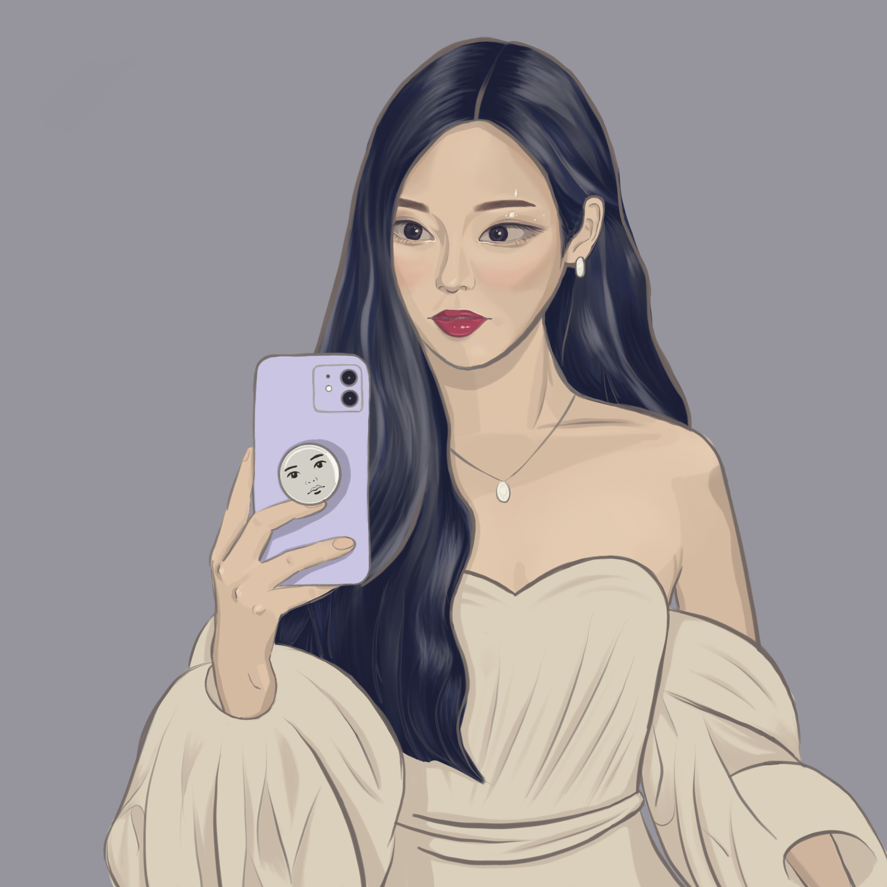

gracespixels
Hi, I'm Grace!
This is my corner of the internet! I usually post my art on my Instagram page, but this site will allow me to write more about the thought process behind some of my work. My name is Grace Cui and I am a senior at Carnegie Mellon University studying Statistics and Machine Learning. I live in Pittsburgh with my maltipoo puppy Daisy. We spend a lot of time together playing fetch in our apartment and cuddling in the blankets when it is raining hard outside (Daisy is scared of thunder and fireworks, but not much else).
I took art classes from age 5 to age 16, and the medium I used most was colored pencil in traditional sketching. I picked up art again as a healthier coping mechanism in my sophomore year of college. Since then, I've taught myself to work with watercolors, acrylic paint (on canvas and on shoes/water bottles for custom gifts), and digital art. I really have no consistency in my creations, as I told myself that I would only draw what I feel like drawing in the moment so that art remains a safe space for me to express my emotions.
Some of my work:
